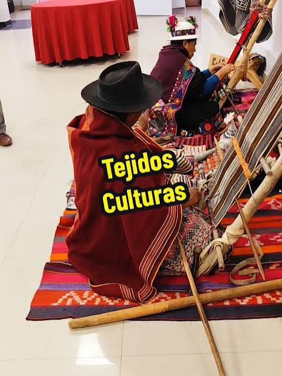

1. Chuquisaca
Técnicas: tejido en telar, bordado y costura artesanal.
En el departamento de Chuquisaca, la artesanía textil se caracteriza por la elaboración de tejidos tradicionales mediante telares y técnicas manuales transmitidas de generación en generación. Las artesanas utilizan lana de oveja y otros materiales para crear prendas, mantas, fajas y accesorios con diseños geométricos, figuras y combinaciones de colores. En comunidades como Tarabuco destacan los tejidos elaborados con símbolos que representan la naturaleza, las costumbres, las actividades cotidianas y la identidad cultural de sus habitantes. El bordado y la costura artesanal también permiten decorar y complementar diferentes prendas tradicionales.